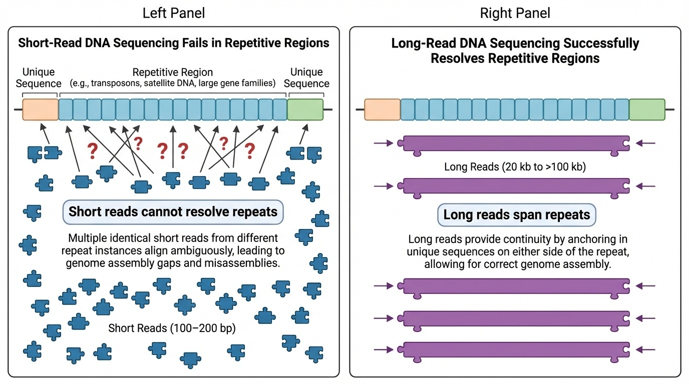
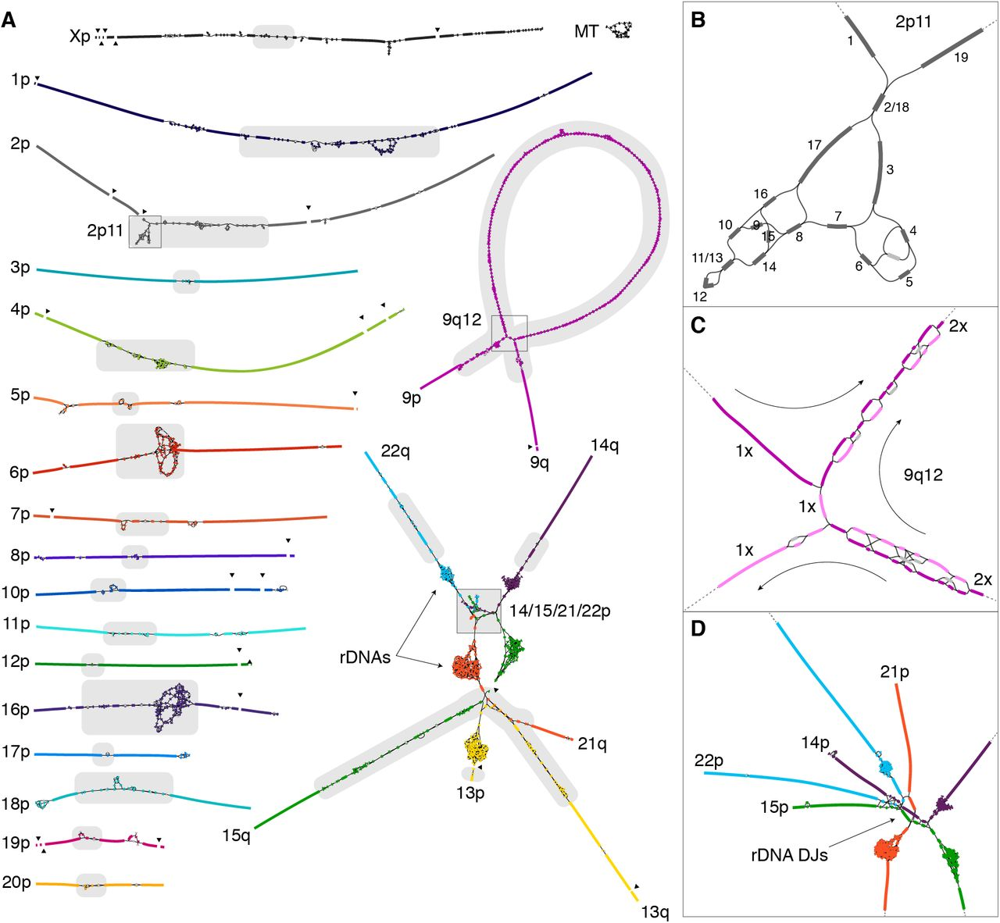
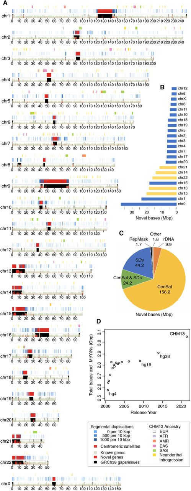
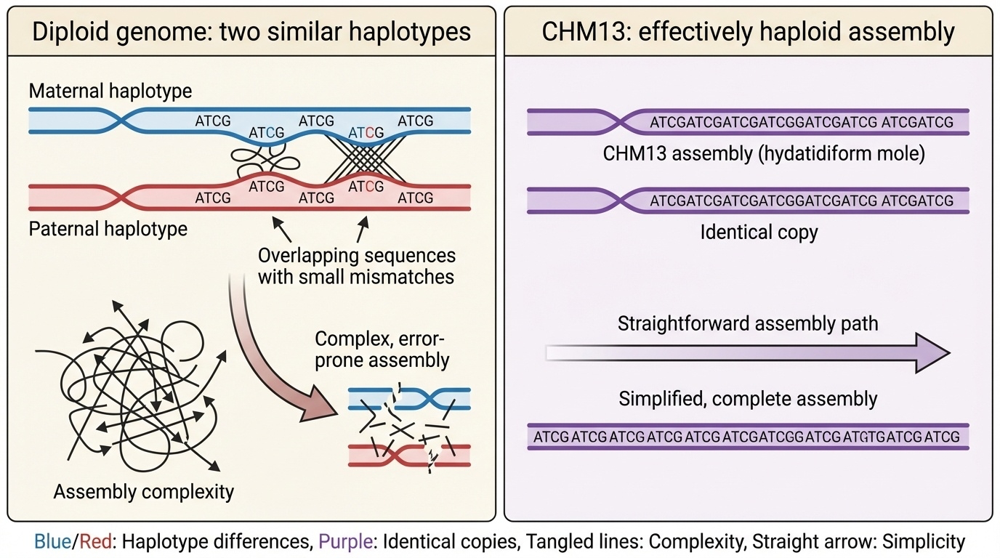
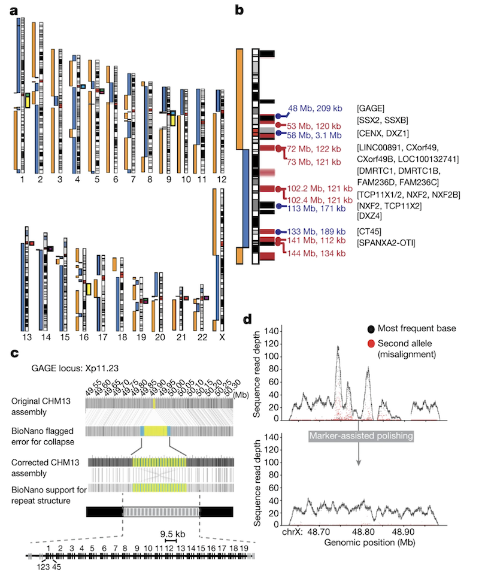
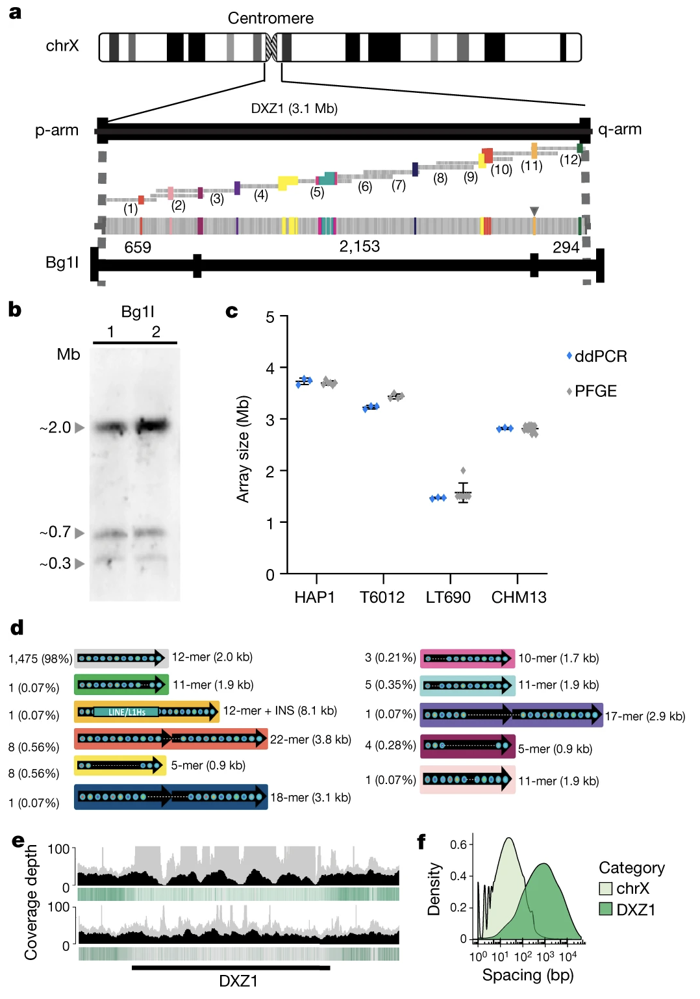
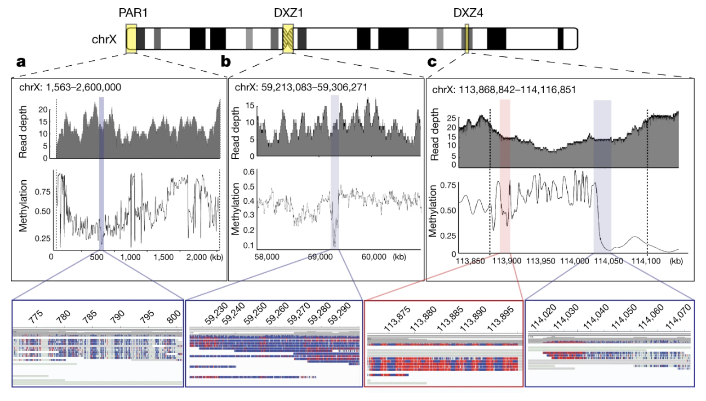
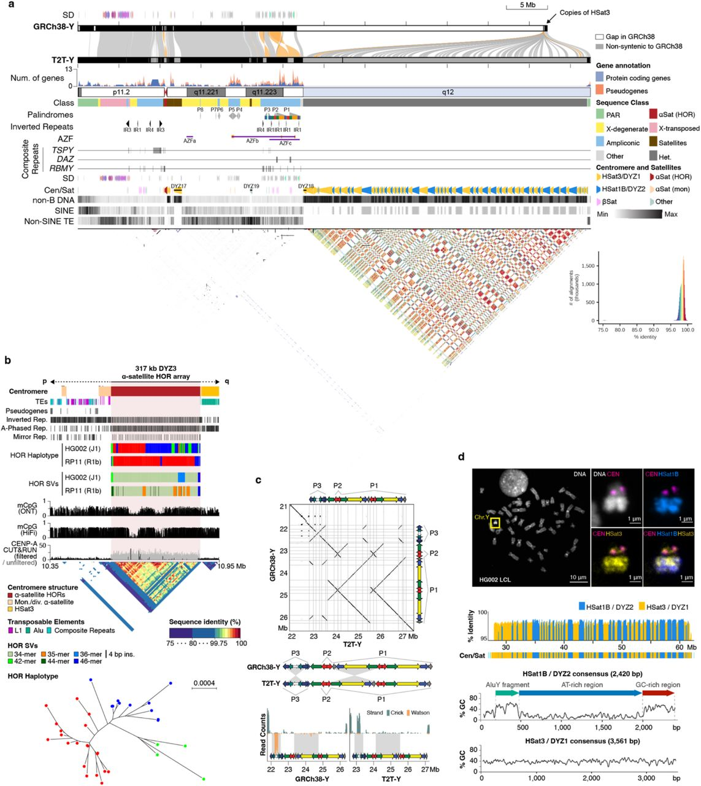

BSMS205 · Genetics
The Telomere-to-
Chapter 2 · Part I · The Human Genome
Welcome to chapter two of BSMS two oh five Genetics. Last time we ended on a question — if the Human Genome Project finished ninety-nine percent of the gene-containing regions back in two thousand three, why would anyone bother going back to finish the last eight percent? Today we answer that question. The story is about a project called Telomere-to-Telomere, abbreviated T two T, which in twenty twenty-two produced the first truly complete human genome sequence. We will look at why those gaps existed, what new technologies finally closed them, why a strange cell line called CHM thirteen was the secret weapon, and what we found hiding inside the dark regions of our chromosomes.
A question to start with
Was the genomecomplete ?
Here is the question I want you to hold in your head for the rest of the lecture. In two thousand three, news outlets around the world declared that the human genome had been sequenced. Champagne corks popped. Press releases went out. Textbooks were updated. But behind closed doors, the geneticists themselves knew something the headlines glossed over. The genome was not actually complete. Roughly eight percent of it was still missing — and not because anyone had forgotten about it. The missing pieces were specifically the parts that the technology of the time simply could not read. So today we ask: what was missing, why, and how did we eventually finish it?
The "complete" genome wasn't
HGP declared complete in 2003
About 8% still unsequenced
Not random gaps — the hardest regions
Centromeres · telomeres · ribosomal DNA
Functionally critical, technically impossible.
Let's be specific about what was missing. About eight percent of the genome remained unsequenced after two thousand three. That is not a rounding error — that is roughly two hundred and forty million base pairs of human DNA. And these were not random scattered gaps. They were concentrated in very specific regions. Centromeres — the central pinch of each chromosome that helps separate them during cell division. Telomeres — the protective caps at chromosome ends. Ribosomal DNA arrays — the genes that build the ribosomes that make every protein in your body. These are not optional regions. Without them, cells cannot divide, cannot make proteins, cannot function. They were missing not because they did not matter, but because they were technically impossible to sequence.
The audacious goal
3,055,000,000
base pairs · every single one · telomere to telomere
The first truly complete human genome
Released in 2022 as T2T-CHM13
Added ~200 million bp of new sequence
Here is the goal that the T two T consortium set itself. Three billion fifty-five million base pairs — every single one, from one end of every chromosome to the other end. The name "telomere-to-telomere" comes from this — the assembly is continuous from the telomere on one end, through the centromere, all the way to the telomere on the other end, with no gaps anywhere. They released this in twenty twenty-two as T two T dash C H M thirteen, named after the cell line they used. Compared to the old reference, they added about two hundred million base pairs of completely new sequence — sequence that no human had ever read before.
Roadmap for today
Why the HGP couldn't finish
The technologies that changed everything
CHM13 · the special cell line
The X chromosome · 2020 · proof of concept
What's new in T2T-CHM13 · 2022
Finishing the Y chromosome · 2023
Summary & what comes next
Here is how we will move today. First, why short-read sequencing — the workhorse of the H G P — physically could not finish the repetitive regions. Second, the new long-read technologies that made finishing possible. Third, the unusual cell line C H M thirteen, which simplified the assembly problem in a clever way. Fourth, the twenty twenty proof-of-concept where the team finished a single chromosome — the X — and worked out the methods. Fifth, the twenty twenty-two release of the full T two T dash C H M thirteen genome. Sixth, the twenty twenty-three completion of the Y chromosome, which C H M thirteen lacked. And finally a summary that bridges into chapter three, where we go deeper into C H M thirteen itself.
§ 1
Why couldn't
Let's start at the technical bottom. To understand why eight percent remained, we need to understand exactly how short-read sequencing works, and why repetitive DNA breaks it.
Short reads · 100–200 base pairs
HGP-era sequencing read tiny fragments
Worked great for unique DNA sequence
Reassembled like overlapping puzzle pieces
One method, used on the whole genome
The H G P era used what we call short-read sequencing. Each read — each individual piece of DNA the machine actually reads — was only about one hundred to two hundred base pairs long. Now, for most of the genome, that is fine. If the underlying DNA is unique sequence — meaning each region has its own distinct fingerprint — then you can chop it into millions of short pieces, sequence each piece, and reassemble them by finding overlaps. It is exactly like a jigsaw puzzle where every piece has a unique shape. The HGP did this beautifully across roughly ninety-two percent of the genome.
Where short reads fail

Figure 1. Short reads (100–200 bp) cannot place themselves in long repetitive regions — every repeat looks the same. Long reads (20 kb to 100+ kb) span multiple repeats in one read, anchoring the sequence uniquely.
Here is the problem in one picture. On the top row you see a stretch of repetitive DNA — the same short sequence repeated many times, like centromeric satellite DNA. When you cut it into short reads and try to reassemble it, every read looks identical. There is no overlap that tells you which copy goes where. The reads pile up in one ambiguous heap. On the bottom row you see what happens with a long read — a single read tens of thousands of base pairs long. It covers many repeats at once, but it also extends into the unique flanking sequence on either side. Now there is something to anchor it to. That difference — anchoring versus floating — is what separates the H G P era from the T two T era.
The book analogy
Imagine a book where dozens of pages"and then they walked" .
You can read each page
You cannot tell which page goes where
The story falls apart in the middle
That's the centromere problem
Here is the analogy I find most helpful. Imagine you have a book where, in the middle, dozens of pages all read exactly the same sentence — "and then they walked." If someone tears the pages out and asks you to put them back in order, you can read each page perfectly. But you cannot tell page seventy-three from page seventy-four. They are identical. The story falls apart right in the middle. That is exactly the centromere problem. The DNA letters are readable. But because the same sequence appears thousands of times in a row, no individual short read knows where its copy belongs. The HGP did not fail to read centromere DNA — it failed to place it.
The four hard regions
Centromeres · alpha satellite arrays · 100s of kb to MbTelomeres · TTAGGG repeats at chromosome endsRibosomal DNA · 45 kb units repeated 100s of timesSegmental duplications · large blocks · 90–99% identical
Together: ~240 million base pairs of "dark matter".
Let's name the four kinds of regions that broke short reads. Centromeres — the alpha satellite arrays at chromosome centers, ranging from hundreds of kilobases to several megabases of repeats. Telomeres — the T-T-A-G-G-G repeat caps at chromosome ends. Ribosomal DNA arrays — the genes that build ribosomes, with each unit forty-five kilobases long, repeated dozens to hundreds of times in tandem. And segmental duplications — large blocks of DNA, ten thousand to millions of base pairs long, copied across the genome at ninety to ninety-nine percent sequence identity. Together these regions are about two hundred and forty million base pairs. People used to call this "dark matter" — visible in microscopy, invisible to sequencing. The T two T project finally turned the lights on.
§ 2
The technologies
Now let's look at the new technologies that finally allowed those regions to be assembled. This is where T two T differs fundamentally from the HGP. Different molecule, different machine, different math.
Two long-read platforms
PacBio HiFi
~20,000 bp per read
Very high accuracy
Resolves most repeats
Oxford Nanopore
>100,000 bp per read
"Ultra-long" reads
Spans even mega-repeats
Two long-read technologies powered T two T. On the left, PacBio HiFi — reads about twenty thousand base pairs long, with very high per-base accuracy. PacBio HiFi alone resolves most of the repeats in the genome. On the right, Oxford Nanopore — reads that can exceed one hundred thousand base pairs, sometimes called "ultra-long" reads. These were essential for the longest repeat arrays, the centromeres and ribosomal DNA blocks, where even twenty kilobase reads were not enough to span the whole array. The combination — accurate medium-long reads from PacBio plus extremely long reads from Nanopore — is what made T two T mathematically possible.
Plus four supporting methods
Illumina short reads · for error correctionHi-C · maps how DNA folds in 3DBionano optical mapping · long-range physical mapStrand-seq · which strand came from which parent
Long reads were the headline, but four supporting methods provided independent checks on the assembly. Illumina short reads were used to correct errors in the long-read sequence — short reads have higher per-base accuracy than nanopore reads, so they polish the final letters. Hi-C measures how DNA folds in three dimensions, which gives a long-range scaffolding signal — pieces that fold together must be near each other on the chromosome. Bionano optical mapping creates a physical fingerprint of the genome at the megabase scale, providing yet another long-range backbone. And Strand-seq tracks which DNA strand came from which parent, which is helpful for separating maternal from paternal copies. Each of these is a different kind of evidence. T two T used all of them.
String graphs · not a line
Old assemblies = a single linear sequence
T2T uses a graph : nodes = sequences, edges = overlaps
Like a subway map · multiple possible routes
Long reads pick the correct path through repeats
Now a brief computational note — and here is the part that often gets confused. Old assemblies represent the genome as a single linear sequence, like a long line of letters. T two T used something called a string graph instead. In a string graph, nodes are pieces of DNA and edges show where they overlap. Picture a subway map — multiple possible routes between stations. In repetitive regions, the graph branches and tangles in many places, because there are many possible ways those repeats could connect. The job of the assembly is to pick the one correct path. And that is where long reads come in — a single ultra-long read that spans through a tangled region effectively tells the algorithm "this is the path." The graph plus long reads is the magic combination.
The string graph · seeing the tangle

Figure 2. The CHM13 string graph. Each line is a sequence; intersections show overlaps. Tangled regions = highly repetitive zones (centromeric satellites, ribosomal DNA arrays). Long reads pick the correct path through each tangle · Nurk et al. 2022, Science (preprint bioRxiv ). CC-BY 4.0.
Here is what a string graph actually looks like, taken straight from the Nurk twenty twenty-two paper. Every line you see represents a piece of D N A sequence, and every place where lines cross is a place where two sequences overlap. Notice the long, clean stretches — those are the easy parts of the genome where the path is unambiguous. Then look at the dense, tangled regions. Those are the hard parts. The biggest tangles correspond to centromeric satellite arrays and the ribosomal D N A repeats on the acrocentric chromosome short arms — exactly the regions the H G P could not finish. Inside one of those tangles there are dozens or hundreds of possible routes that connect the same start to the same end. Without long reads, you cannot tell which route is correct. With long reads spanning right through the tangle, you can. That is the entire trick of T two T assembly, distilled into one picture.
What it looks like

Figure 2. T2T-CHM13 assembly ideogram. Red regions = new sequence not in GRCh38, including all centromeres and the short arms of acrocentric chromosomes 13, 14, 15, 21, 22 · Nurk et al. 2022, Science .
Here is what T two T dash C H M thirteen actually looks like, plotted as a chromosome ideogram. Each row is a chromosome, and the red areas highlight what is newly added — what is in T two T but was missing or wrong in the old GRCh thirty-eight reference. Notice where most of the red lives. It is concentrated at every centromere, and there is enormous red on the short arms of chromosomes thirteen, fourteen, fifteen, twenty-one, and twenty-two — those are the acrocentric chromosomes that contain the ribosomal DNA arrays. That is the eight percent of the genome that the H G P could not finish, finally filled in.
Final accuracy
1 / 10,000,000
error rate · one mistake per ten million bases
Better than the original HGP standard
Verified across many independent methods
The most accurate human genome ever assembled
And here is what the combined approach delivered. The final T two T dash C H M thirteen assembly has an error rate of about one mistake per ten million bases. Hold that number in your head — one in ten million. The H G P benchmark for "finished" was one in ten thousand. T two T is a thousand times more accurate. And this is verified — they used the long reads to check the long reads, the Illumina reads to check both, the Bionano optical maps to check the long-range structure. Everything cross-checks. This is the most accurate human genome assembly ever produced.
§ 3
What is so special
Now let's talk about the cell line. C H M thirteen is unusual in a way that turns out to be a major asset. We will spend an entire chapter on this in chapter three, but here is the essential idea.
A complete hydatidiform mole
Origin: an egg with no genetic material
Fertilized by sperm that duplicates its own genome
Result: two identical copies of every chromosome
All from the father · none from the mother
C H M thirteen is derived from a complete hydatidiform mole. That is a rare kind of tissue that forms when an egg without any maternal DNA is fertilized by a sperm — and then that sperm duplicates its own genome. The result is a cell with two complete copies of every chromosome, but both copies are identical and both are from the father. The mother contributed nothing genetically. This is not a viable embryo and clinical hydatidiform moles are abnormal pregnancy outcomes, but as a cell line for sequencing it has a remarkable property — its two chromosome copies are indistinguishable.
Why this simplifies assembly

Figure 3. Typical diploid: maternal + paternal copies differ slightly, must be distinguished. CHM13: two identical paternal copies — effectively haploid for assembly.
Here is why that matters for sequencing. In a typical human genome, you have one copy of each chromosome from your mother and one from your father, and the two copies differ at millions of positions. When you assemble such a genome, the algorithm has to constantly decide — is this read different because it is from the other copy, or because it is a sequencing error? In repetitive regions, that decision is very hard. C H M thirteen sidesteps the problem entirely. Its two copies are identical, so any difference between reads must be sequencing error. The assembly problem becomes effectively haploid — one genome, not two — and the repetitive regions become tractable.
The catch
Two X chromosomes · no Y
So T2T-CHM13 has no Y
Y was finished separately in 2023
Using a different cell line · HG002
There is one catch. C H M thirteen is forty-six X X — meaning two X chromosomes and no Y. So when the T two T consortium released their twenty twenty-two assembly, it was complete for chromosomes one through twenty-two and X — but it had no Y chromosome. The Y was finished separately in twenty twenty-three using a different cell line called H G zero zero two, which we will get to later in the lecture. For now, just remember — the twenty twenty-two T two T assembly is forty-six X X, and you needed a separate sample to finish the Y.
§ 4
2020 · the first
Before they finished the whole genome, the T two T team did something smaller as a proof of concept. In twenty twenty, they completed a single chromosome — the X — and worked out the methods that would later be applied to all the others. That paper is one of the most cited papers in genomics this decade. Let's go through it.
Why start with X?
Initial assembly was broken in only three places
X centromere (DXZ1) was well-studied
X is medically important · many disease loci
CHM13 has two X copies · no Y interference
Why pick the X chromosome first? Four reasons. First, in their preliminary assembly the X was already mostly intact — it was broken in only three places, the centromere and two large segmental duplications. Second, the X centromere — called D X Z one — had been studied by molecular biologists for decades, so there were external benchmarks to compare against. Third, the X is medically important — disproportionately many genetic diseases map to it. And fourth, C H M thirteen has two X copies and no Y, so they could focus on X without Y-X cross-mapping issues. It was the chromosome most likely to succeed.
Three places where X was still broken

Figure 3. Initial CHM13 X assembly. Breaks at the centromere (artificially collapsed), a 120-kb segmental duplication (DMRTC1B ), and a 134-kb segmental duplication with a paralogue on chromosome 2. Black bars = GRCh38 gaps; red bars = known segmental duplications · Miga et al. 2020, Nature . CC-BY 4.0.
Here is the figure from Miga twenty twenty Nature that shows exactly where the X chromosome was still broken. Three locations. The centromere — D X Z one — which had been artificially collapsed in the assembly because the methods could not handle it. A one hundred twenty kilobase segmental duplication near a gene called D M R T C one B. And a one hundred thirty-four kilobase segmental duplication that has a near-identical paralogue on chromosome two. The black bars on the figure mark gaps that were also present in the GRCh thirty-eight reference — these were inherited from the H G P era. The red bars show segmental duplications. Notice how the breaks cluster at exactly the kinds of regions we discussed earlier — repeats and segmental duplications. The figure makes the abstract idea concrete. Three specific places, each requiring its own solution. The rest of the chapter is about how they solved each one.
The centromere · 3.1 megabases
3.1 Mb of alpha satellite DNA~1,408 copies of a 2,057-bp repeat unit
Standard polishing methods made it worse
Reads kept landing in the wrong place
The X centromere is three point one megabases of alpha satellite D N A. To put that in perspective — that is bigger than many entire bacterial genomes, and it is just the centromere of one chromosome. It consists of about one thousand four hundred and eight copies of a roughly two thousand base pair repeat unit, lined up head to tail. When the team first tried to clean up the assembly using standard polishing methods, the quality actually got worse. Why? Because the polishing tools kept placing reads in the wrong centromere copy. The reads were all so similar that the algorithm had no way to know which of the fourteen hundred copies any given read came from. Standard methods were broken.
Marker-assisted polishing
Find 21-bp sequences that appear only once in the genome
Even inside DXZ1: a marker every 2.3 kb on average
Anchor reads using these unique markers
Iterate: Nanopore → PacBio → Illumina
Find what is unique even inside repeats.
Their solution was a beautiful idea called marker-assisted polishing. Even inside a highly repetitive array like the X centromere, the repeats are not perfectly identical — there are tiny variations. The team scanned the genome for short twenty-one base pair sequences that appear only once in the whole genome, and they used these as unique markers. Inside the D X Z one centromeric array, they found a unique marker every two point three kilobases on average. So even though most of the array looked the same, they had little anchor points scattered through it. They then used these markers to correctly place reads, polishing the assembly iteratively — first with Nanopore reads, then PacBio, then Illumina. Each round improved accuracy. The headline insight: even inside repeats, find what is unique.
Validating the centromere structure

Figure 4. Multiple independent methods confirm the DXZ1 array structure: PFGE Southern blots, ddPCR copy counting, optical mapping, and 33 catalogued structural variants · Miga et al. 2020, Nature .
The team validated the centromere assembly using several independent methods, shown in this figure from the Miga twenty twenty Nature paper. They used pulsed-field gel electrophoresis — a way of sizing very large D N A molecules — and confirmed the array was about two point eight seven megabases. They used droplet digital P C R to count repeat copies and got fourteen hundred and eight, matching the assembly. They used optical mapping to check the restriction enzyme pattern. And they catalogued thirty-three different structural variants within the array — places where the basic twelve-mer repeat unit had been altered into eleven-mers, eighteen-mers, twenty-two-mers, and so on. This level of detail had never been seen before. The X centromere went from a black box to a fully described biological object.
What the complete X delivered
Closed 29 gaps · 1.15 million bases of new sequence
Met the original Bermuda standard for finished genomes
Complete GAGE , CT45 , CT47 gene families
First complete pseudoautosomal regions (PAR1 + PAR2)
What did finishing the X actually deliver? Twenty-nine gaps in GRCh thirty-eight were closed, adding about one point one five million bases of brand new sequence to the X chromosome. The accuracy met the original Bermuda standard for "finished" genomic sequence. Several medically important gene families that had been incomplete were now complete — the GAGE family with nineteen full copies, the CT forty-five family, the CT forty-seven family, all of which are cancer-testis antigens with relevance to cancer biology. And for the first time we had complete sequences of the pseudoautosomal regions — PAR one and PAR two — the small parts of the X that recombine with the Y during meiosis. These had been mostly missing or fragmented before.
Bonus · methylation across the centromere
Nanopore reads also detect DNA methylation
Found a 93 kb hypomethylated dip inside DXZ1
Probably where kinetochore proteins bind
Same dip seen later on chromosome 8
And one bonus finding from the X paper. Nanopore sequencing has the unusual property that it can detect D N A methylation directly from the same reads used for sequencing. So once the centromere was assembled, the team could also map methylation across it at single-base resolution. They found something striking — a ninety-three kilobase region inside D X Z one that is consistently unmethylated, surrounded by heavily methylated DNA. That hypomethylated region is most likely where kinetochore proteins bind during cell division — the actual functional core of the centromere. They later assembled the centromere of chromosome eight and saw the same pattern. So this hypomethylated dip may be a general signature of where centromeres do their actual job. None of this would have been visible without finishing the assembly.
Methylation across the complete X

Figure 5. Methylation patterns from Nanopore reads. (a) Hypomethylated PAR1; blue = unmethylated, red = methylated. (b) A 93-kb hypomethylated region inside the DXZ1 centromere — the likely kinetochore-binding core. (c) The DXZ4 macrosatellite array showing a sharp methylated→unmethylated transition · Miga et al. 2020, Nature . CC-BY 4.0.
Here is the methylation map from the same Miga twenty twenty paper. Three panels. Panel a — the pseudoautosomal region one, P A R one, at the very tip of the short arm of X. It is consistently unmethylated, shown in blue, with methylated bases in red. Panel b is the most famous one — that ninety-three kilobase hypomethylated dip sitting inside the D X Z one centromere. The surrounding centromeric repeats are heavily methylated, but this one block is open. That is almost certainly where the kinetochore actually binds during cell division — the functional center of the centromere, identified for the first time. Panel c shows the D X Z four macrosatellite array, which marks the boundary between two large topological superdomains of the X chromosome — and you can see a sharp methylation transition right at that boundary. None of these patterns were visible before the X was finished. Methylation, kinetochore biology, and chromosome topology — all readable from the same set of long reads.
§ 5
What's new
With the X chromosome methods proven, the T two T consortium scaled up to the rest of the genome. Twenty twenty-two — the full T two T dash C H M thirteen assembly is published. Let's look at the four major categories of new content.
Region 1 · centromeric satellite arrays
All 22 autosomes + X centromeres complete
Sizes: 366 kb (Y) to several megabases
Different chromosomes use different alpha satellite variants
Some centromeres (chr 1, 5, 19) share sequence
Region one — centromeric satellite arrays. Every centromere in the C H M thirteen genome is now fully sequenced. They range in size from about three hundred sixty-six kilobases on chromosome Y up to several megabases. Different chromosomes use different variants of alpha satellite — different higher-order repeat structures. And interestingly, some chromosomes — one, five, and nineteen — share very similar centromere sequences, which suggests recent exchange of D N A between those centromeres in evolutionary time. None of this was visible before because none of the centromeres were assembled before.
Why centromeres matter
Centromere errors → chromosome missegregationaneuploidy → cancer, Down syndrome.
Kinetochores attach here during cell division
Most aneuploid embryos are non-viable
Aneuploidy in adult cells associated with cancer
Why do centromeres matter clinically? Centromeres are where kinetochores assemble — the protein machines that grab onto spindle microtubules and pull chromosomes apart during mitosis and meiosis. If a centromere malfunctions, chromosomes get distributed unequally to daughter cells. That is aneuploidy — cells with the wrong chromosome number. Most aneuploid embryos do not survive — that is one of the major causes of early miscarriage. Aneuploidy in adult cells is a hallmark of nearly every cancer. So having complete centromere sequences is not just a technical curiosity — it lets us study the architecture of an essential biological machine, in detail, for the first time.
Region 2 · segmental duplications
201.93 Mb of segmental duplications · driver of structural variation.
Region two — segmental duplications. These are large blocks of DNA, typically thousands to millions of base pairs, that appear in multiple places in the genome with ninety to ninety-nine percent sequence identity. In the old GRCh thirty-eight reference, only about five percent of the genome was confidently called as segmental duplication. In T two T dash C H M thirteen, it is six point six one percent — about two hundred and two megabases. That extra one and a half percent is real biology that was previously hidden. Segmental duplications matter because their high sequence similarity drives non-allelic homologous recombination — the wrong copies pair up during meiosis, and that creates large structural variants that can cause disease.
Segmental duplications · trait + disease
Adaptive
AMY1 · salivary amylaseCopy number ↔ dietary starch
Disease
Many genomic disorders
FSHD · muscular dystrophyCharcot-Marie-Tooth, etc.
Segmental duplications can be adaptive or disease-causing. On the adaptive side, the salivary amylase gene AMY one — copy number variation in this region correlates with how much starch a population has historically eaten. Populations with starch-heavy diets carry more copies. On the disease side, segmental duplications are responsible for many genomic disorders, including facioscapulohumeral muscular dystrophy and Charcot-Marie-Tooth disease. The pattern is the same — when nearly identical sequence blocks are nearby, recombination can pair up the wrong ones and create deletions, duplications, or inversions. Now that T two T has them all assembled correctly, we can finally study these regions properly.
Region 3 · acrocentric short arms
Chromosomes 13, 14, 15, 21, 22
Short arm carries ribosomal DNA arrays
Each rDNA unit = 45 kb , repeated 100s of times
CHM13 has ~400 rDNA copies total
Region three — the short arms of the acrocentric chromosomes. There are five chromosomes where the centromere sits very close to one end, leaving a short p arm and a long q arm. These are chromosomes thirteen, fourteen, fifteen, twenty-one, and twenty-two. The short arms carry tandem arrays of ribosomal DNA — the genes that encode ribosomal RNA. Each ribosomal D N A unit is about forty-five kilobases, and it is repeated dozens to hundreds of times. C H M thirteen carries about four hundred copies in total, distributed across the five acrocentric short arms. These are essential — they make the ribosomal RNA that builds your ribosomes that build all your proteins. And they were entirely missing from earlier reference genomes.
The nucleolus connection
The five acrocentric short arms cluster together in the cell
That cluster forms the nucleolus
Where ribosome biogenesis happens
Short arms share ~98.7% sequence identity
Here is something that fits beautifully into cell biology. In the nucleus of every cell, the five acrocentric short arms cluster together physically — the proteins and RNA that need to find ribosomal D N A all gather there, and that gathering point is what we call the nucleolus. The nucleolus is the factory where ribosomes are assembled. And here is the kicker — the short arms across these five different chromosomes share about ninety-eight point seven percent sequence identity. They are essentially clones of each other. Why so similar? Probably because they are physically close in the nucleolus and exchange DNA frequently. So the genome architecture and the nuclear architecture reinforce each other. Cool result, only visible because T two T finally assembled these regions.
Quick reference · the four hard regions
Region Size in T2T Why it matters
Centromeric satellites 366 kb – several Mb Cell division Segmental duplications 201.93 Mb (6.61%) Structural variation Acrocentric short arms 66.1 Mb total Ribosome biogenesis Yq12 heterochromatin >30 Mb Unknown · evolving fast
Here is a quick summary table of the four kinds of regions T two T finally assembled. Centromeric satellites — anywhere from three hundred sixty-six kilobases to several megabases per chromosome, essential for cell division. Segmental duplications — about two hundred two megabases, six point six one percent of the genome, drivers of structural variation. Acrocentric short arms — sixty-six point one megabases across the five chromosomes, home of ribosomal DNA and the nucleolus. And the Y q twelve heterochromatic region — over thirty megabases, function still unclear, which we will look at in just a moment. Together this is roughly the eight percent that the H G P could not finish.
§ 6
2023 · finishing
Now the final piece. Remember C H M thirteen is forty-six X X — no Y chromosome. So in twenty twenty-three the consortium finished the Y separately, using a different cell line. This was not an afterthought. The Y was famously the hardest chromosome of all. Let's look at why, and what they found.
Why the Y was so hard
Long palindromes · sequences that read both directions
Many tandem repeats · larger than other chromosomes
Massive heterochromatic block on Yq12
More than half of Y was missing in GRCh38
Why was the Y so hard? Three architectural reasons. First, the Y is full of long palindromes — sequences that read the same forwards and backwards on the chromosome, often spanning hundreds of kilobases each. Palindromes confuse short-read assemblers because the reverse complement of one arm matches the other arm. Second, the Y has many tandem repeat regions that are even larger than the centromere, especially in the long arm. Third, there is a massive heterochromatic block called Y q twelve at the end of the long arm — entirely repetitive, almost entirely missing from the old reference. In fact, more than half of the Y chromosome's bases were missing from GRCh thirty-eight. T two T-Y finally completed it.
T2T-Y · 62.4 megabases · zero gaps

Figure 5. T2T-Y assembly: 62.46 Mb, no gaps · ampliconic gene clusters, palindromes, centromere, and the previously hidden Yq12 satellite blocks revealed for the first time · Rhie et al. 2023, Nature .
Here is what T two T-Y looks like. Sixty-two point four six megabases long, no gaps. The figure shows the full structure — genes along the top, palindromes and inverted repeats in the middle, the centromere, and the satellite-DNA structure of the heterochromatic Y q twelve at the bottom. The dot plot at the bottom of the figure visually shows how repetitive the Y is — every diagonal line represents a self-similar block. Compared to the old GRCh thirty-eight Y, this assembly added more than thirty million base pairs of sequence that had simply never been read. This is the most complete view of any human Y chromosome ever produced.
What the Y carries
SRY · the master male-sex-determining geneTSPY · 45 protein-coding copies (vs 7 in GRCh38)DAZ, RBMY · spermatogenesisAZF regions · deletions cause male infertility
And what genes does the Y actually carry? S R Y, the master gene that flips an embryo onto the male developmental path. Several ampliconic gene families that exist in many copies — TSPY, the largest gene family on the Y, with forty-five protein-coding copies in this individual versus only seven in the old reference. DAZ and RBMY, which are critical for sperm production. And the AZF regions — Azoospermia Factor regions A, B, and C — where deletions are a known cause of male infertility. T two T-Y gives us the first complete picture of all of these. Many were previously underestimated in copy number because the assemblies were broken.
The mysterious Yq12
Was a single 30+ Mb gap in GRCh38
Now: alternating blocks of DYZ1 + DYZ2
Some blocks recently duplicated up to 5 Mb
HSat1B (DYZ2) is almost unique to Y + acrocentrics
And finally — Y q twelve. In GRCh thirty-eight, this was literally a single thirty-megabase-long gap. A black box. T two T-Y finally opened it. Inside are alternating blocks of two satellite DNA families — D Y Z one and D Y Z two — adding up to over thirty megabases of sequence. Some blocks show evidence of very recent duplication, with single duplication events spanning up to five megabases. And one of these satellite families, called H Sat one B or D Y Z two, is almost unique to the Y chromosome and the acrocentric short arms — found almost nowhere else in the genome. That is a fascinating evolutionary clue. We do not yet know what these regions do, but we can finally see them, which means we can start asking.
§ 7
Summary
Let's pull the threads together.
What to take away
HGP left ~8% unsequenced · centromeres, telomeres, rDNA, segdups
Long reads (PacBio HiFi + Oxford Nanopore) finally span repeats
CHM13 · two identical paternal copies · simplifies assembly2020 X chromosome · 2022 T2T-CHM13 · 2023 T2T-YCombined: T2T-CHM13v2.0 · the first truly complete human genome
Five things to take away. One — the HGP left about eight percent of the genome unsequenced, concentrated in centromeres, telomeres, ribosomal DNA arrays, and segmental duplications. Two — long-read sequencing, specifically PacBio HiFi for accuracy and Oxford Nanopore for ultra-long reads, finally allowed the assembly to span those repetitive regions. Three — the cell line C H M thirteen, with its two identical paternal chromosome copies, simplified the assembly problem from diploid to effectively haploid. Four — the project ran in three milestones: the X chromosome in twenty twenty as proof of concept, the full forty-six X X assembly as T two T dash C H M thirteen in twenty twenty-two, and the Y from a different cell line in twenty twenty-three. Five — combined, these become T two T dash C H M thirteen version two point zero, the first truly complete human genome — every base, every chromosome, telomere to telomere.
Next lecture
Where didCHM13 come from?
Chapter 3 · The CHM13 Cell Line
One question to leave you with. We have used C H M thirteen as a key tool in this lecture, but we have not really talked about where it came from. What exactly is a complete hydatidiform mole? How does the biology of a sperm-only conception lead to two identical chromosome copies? Why is C H M thirteen specifically used and not some other mole? And what are the ethical considerations of using a cell line derived from an abnormal pregnancy? That is the story of chapter three. See you next time.